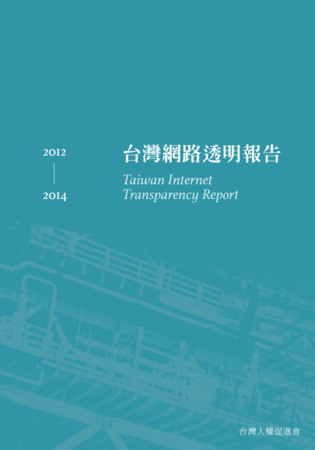
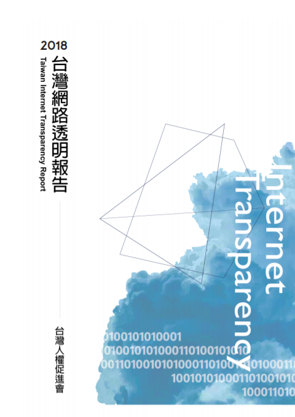
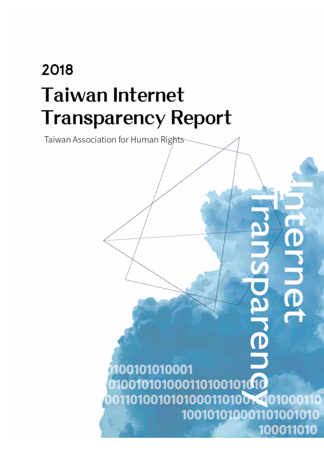
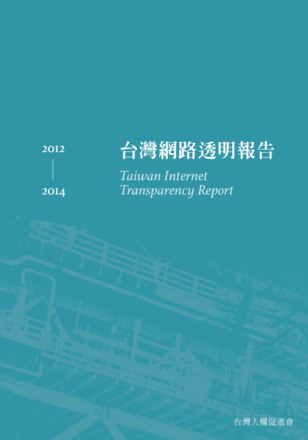
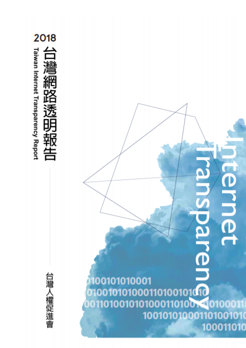
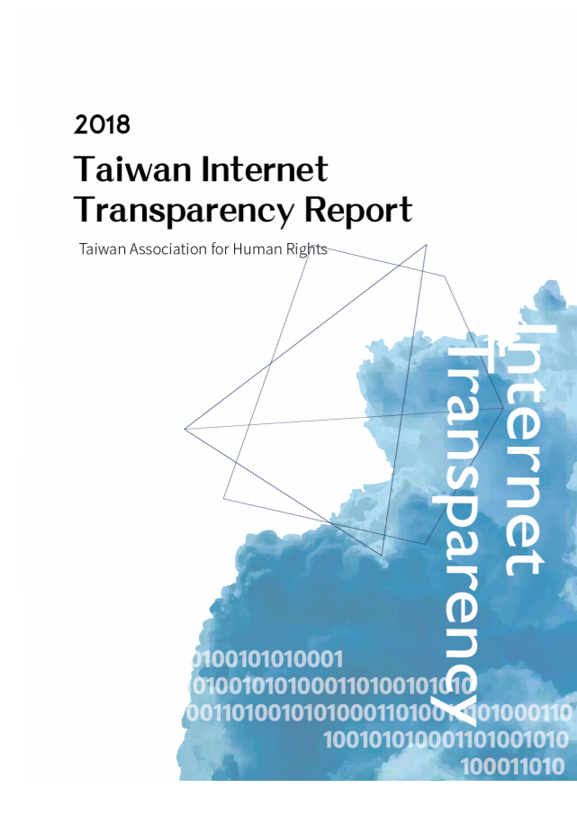

【國際資料隱私日特輯】從2018到2019，你應該繼續關注的台灣隱私新聞
今年的國際資料隱私日（International Data Privacy Day），一如過去兩年（2017年、2018年），台權會也簡要整理了過去及未來一年，台灣值得關注的主要隱私議題。它們必然不是完整的清單，因此若有您認為值得關注的議題，也歡迎您提供我們建議，我們也邀請您繼續一起來關注台灣的隱私議題。
「台灣網路透明報告」為台灣人權促進會針對台灣網路自由及網路隱私所進行之研究計畫。
網路已成為現代人的主要活動、張貼／接收資訊、相互溝通的主要場域。確保政府不濫用使用者線上留存的資料、不任意干涉線上言論，將有助民主社會的長久維持。
有鑑於此，台灣人權促進會自2014年9月起，開始發起「台灣網路透明報告」計畫。我們依《政府資訊公開法》，要求台灣政府揭露其向業者索取資料或限制內容的狀況，包含統計數字、法源依據、流程、制式文件等，並製作相關報告（目前兩年一次），供人民審視，以使人民有對政府進行監督與課責的基礎。
而在報告之外，這個計畫也持續監督台灣的政策、法案，並引入國際相關研究，以激發台灣內部的相關討論。
下載台灣網路透明報告 ↓
 





我們的近程目標是要求各政府單位釋出近年相關資料； 就既有資料，我們提出未來改進建議； 並且要求政府建立資料統計格式。
我們的遠程目標是要求各政府單位應主動公告相關資料，並建立一套標準作業程序及內部稽核作業程序； 建置獨立機關，監督政府相關作為。
我們要求政府不得濫用網路個資。此資料非為網路使用者自願提供給該政府機關，是由各政府機關「直接」向網際網路服務提供者提出請求而得。
我們要求政府不得任意干涉網路言論。干涉意指非出自網路使用者之自願移除，是由各政府機關直接向網路服務提供者提出請求。
尚未完成
今年的國際資料隱私日（International Data Privacy Day），一如過去兩年（2017年、2018年），台權會也簡要整理了過去及未來一年，台灣值得關注的主要隱私議題。它們必然不是完整的清單，因此若有您認為值得關注的議題，也歡迎您提供我們建議，我們也邀請您繼續一起來關注台灣的隱私議題。
你知道檢察官現在用搜索票向網路業者調資料時，是否會通知當事人嗎？而公務機關和網路業者間調資料的流程為何，又是如何建立的呢？ 台權會在2018年9月，與尤美女委員辦公室一同召開的「保障數位人權· 國家監控的透明機制」公聽會，逐字紀錄終於上線了。上述問題也在記錄中有回答。